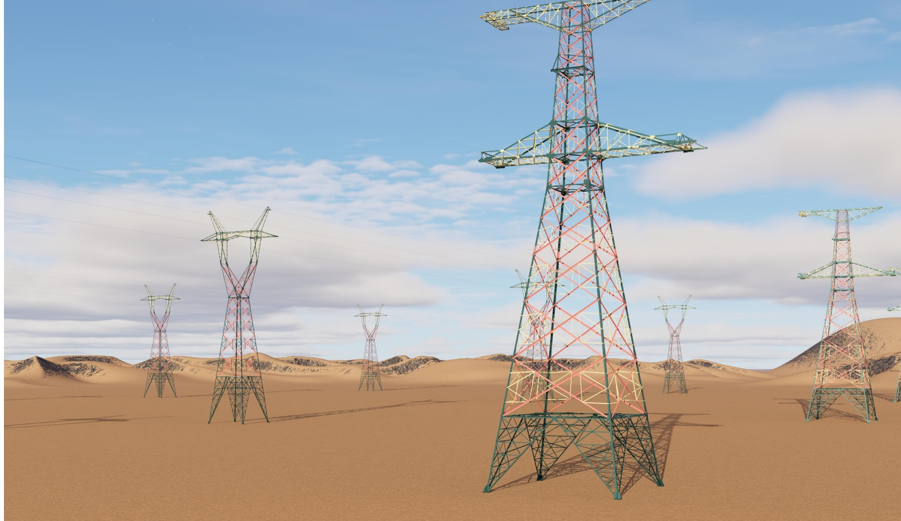
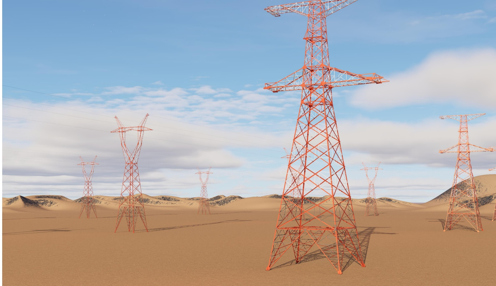
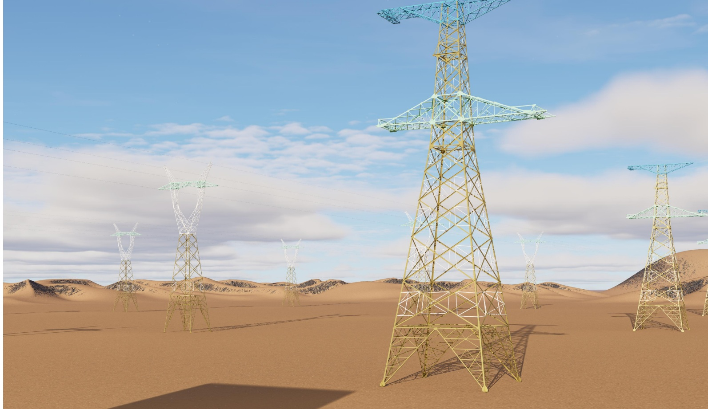
评价与转译逻辑自然 / 建成环境 / 社会文化
自然 / 建成环境 / 社会文化
→ 五维评价 → 主题提取 → 方案比较
文化识别度 · 设计转化度 · 环境融合度 · 美学独特性 · 历史承载度
产出：地域文脉分析、色彩主题与三组方案比较。
相关研究整理为主笔论文《基于文脉特征评价的超高压输电塔工程美学设计方法》。
Research into
possibilities.
从发现问题，到形成策划判断，
再到数据与AI辅助决策。
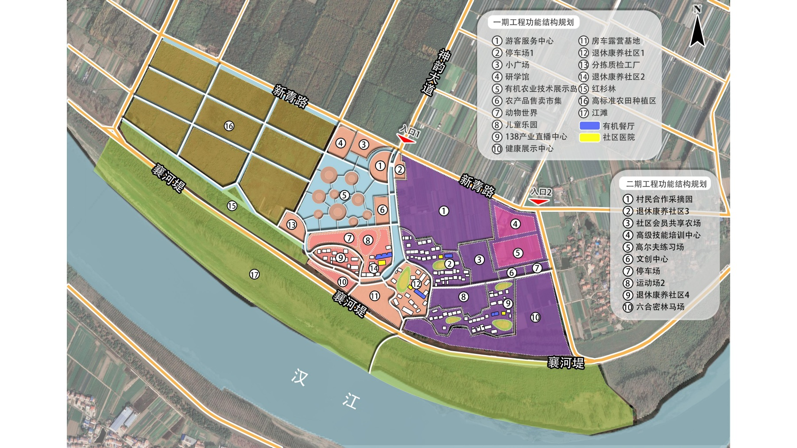
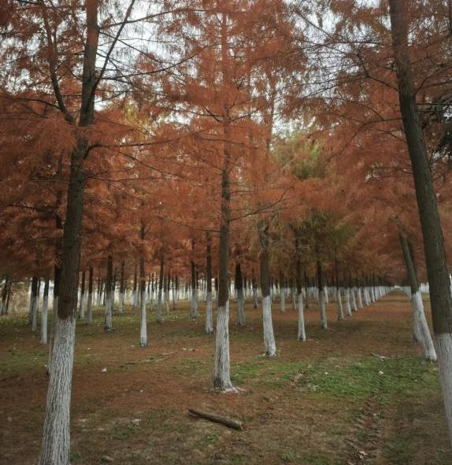
湖北省建筑设计院
策划研究中心实习生
梳理资源与案例，形成客群、定位和活动方案。
把问卷与指标转成图表，让结论可解释。
将匹配逻辑组织为可操作、可检查的决策原型。
以汉江岸线为生态基底，观察农业、村落与城市生活之间的连接。
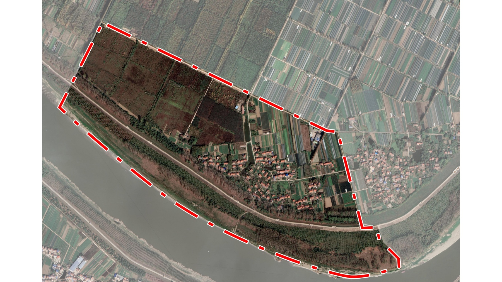
武汉市区1小时生活圈内
原方案将城市可达性与乡村资源共同作为策划起点。
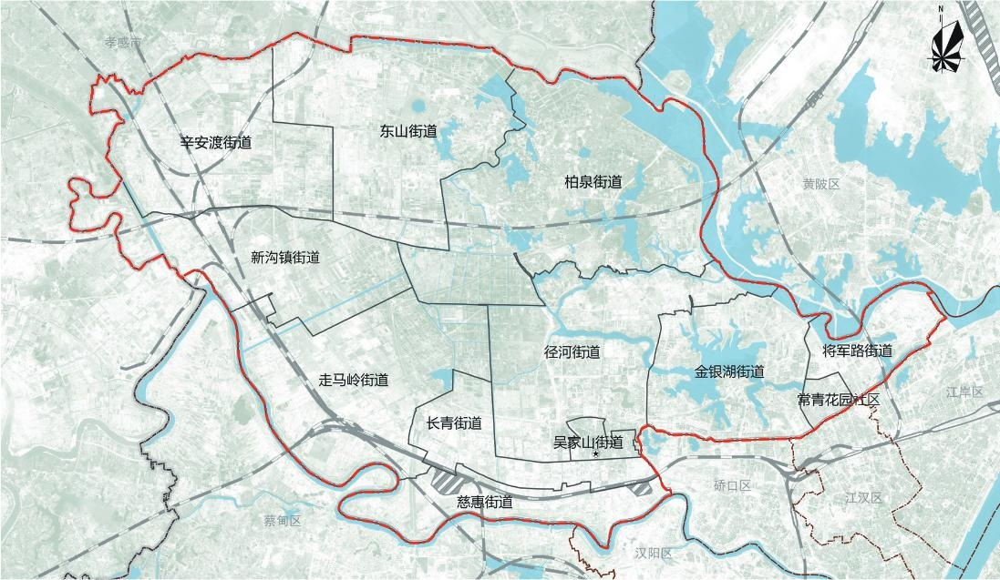
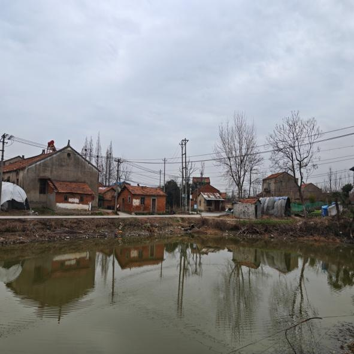
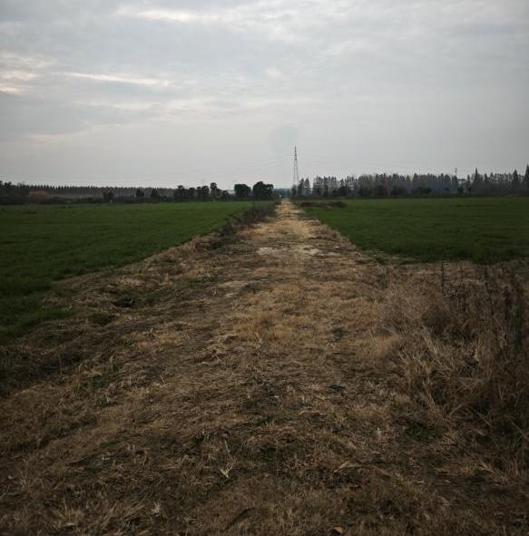
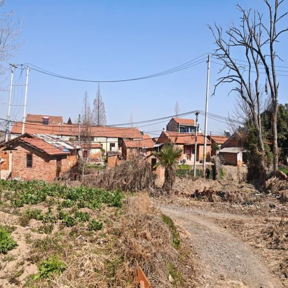
自然本底 林地、水域、农田共同提供生态观光与农事体验条件。
文化线索 汉江文化、七夕传说与皮影技艺，成为研学和体验内容的来源。
规划背景 原方案结合“十四五”、乡村振兴与养老服务相关政策展开研判。
把生态、生产与存量空间
放在同一张策划底图上。
现代农业 × 高端康养 × 生态观光
研学教育 × 露营走马 × 康体养生
主要目标 / 中高收入人群
补充客群 / 亲子与教育研学
高标准农田、有机种植、透明农场、分拣加工。
承接：健康食品供给与农业体验健康院落、生活配套、社区活动与康体服务。
承接：活力长者的日常生活自然课堂、文化美育、露营与运动体验。
承接：亲子家庭与短期访客农产品展示、直播传播、线上线下联动。
承接：产品认知与园区内容传播把农业资源转化为可参与的生活内容，以康养社区形成长期服务需求，再用研学和季节活动组织短期到访。
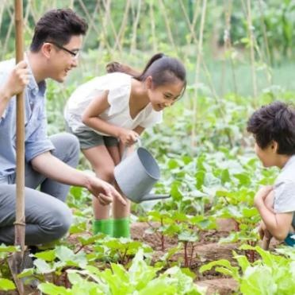
神奇的种子 · 植树节
三月赏花节
春耕野餐节 · 清明
拾味野菜
5km健康走
农忙运动会 · 劳动节
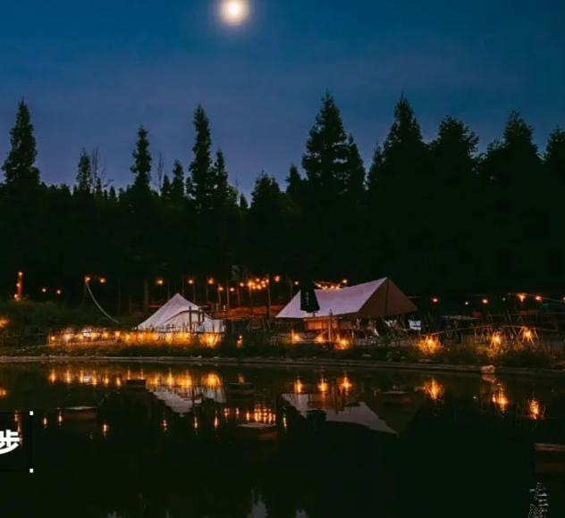
乡村儿童节
播种体验 · 芒种
水果盛会
小溪的精灵 · 戏水
纳凉晚会
星空音乐节 · 七夕
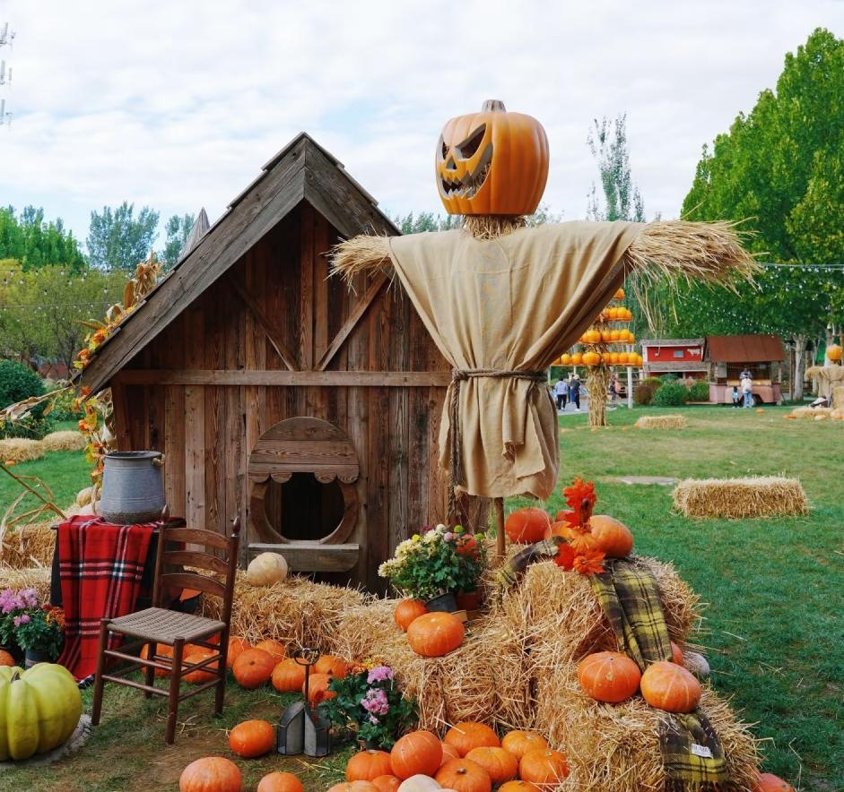
农民丰收嘉年华
稻田艺术节
中秋农场团圆夜
重阳菊花展
储冬感恩节
万圣农场奇幻夜
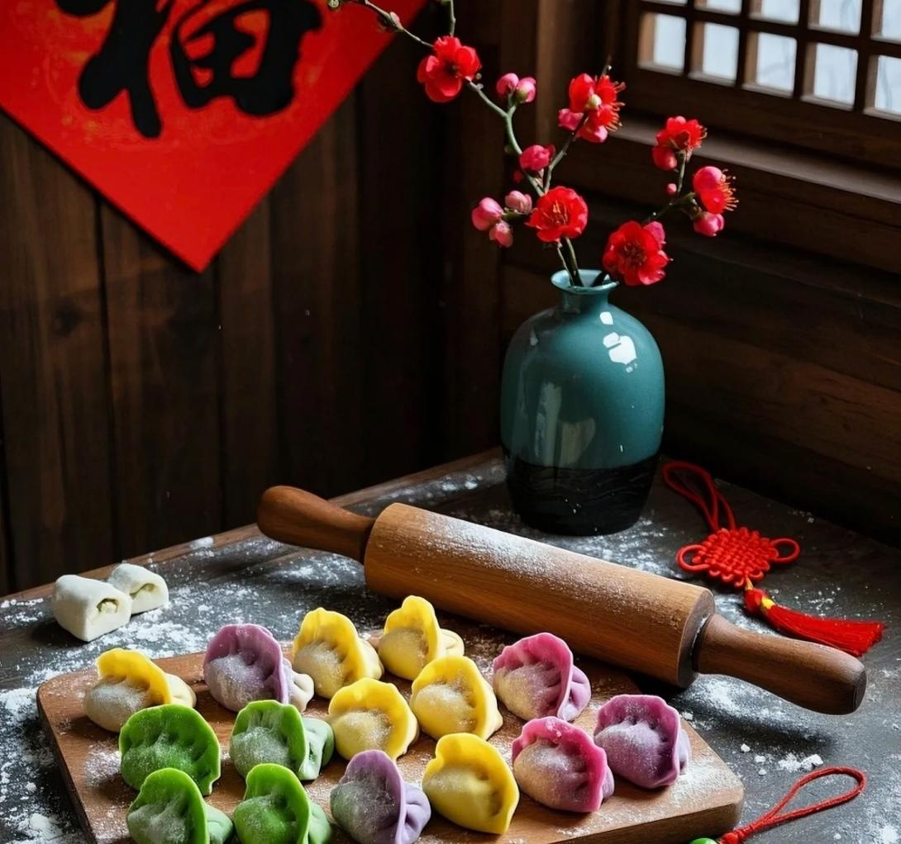
圣诞集市
团圆饺子宴 · 冬至
踏雪寻岁
大地艺术展
传统年俗体验
年货集市
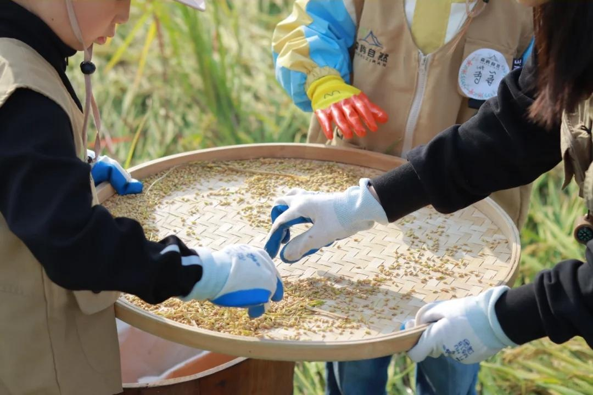
以自然教育、文化美育和素质拓展组织课程；马场体验与皮影制作作为补充内容。
结合场地资源、区域产业条件与地方需求，推动形成“田园退休社区＋工业旅游”的复合发展定位，并参与功能业态与活动场景策划。
按建设规模与单价估算投入，列入客流、消费、研学、农业与维护成本等参数，比较不同情景下的投入与产出。
研究问题：不同资源与客群，如何形成不同的选址、设施与业态组合？
公开资料预研 → 现场观察与访谈
空间 / 业态指标整理 → 类型比较与结论
个人贡献 担任调研组长，组织广州、深圳、东莞及周边地区调研；
主笔65页《粤港澳大湾区文旅康养项目调研报告》。
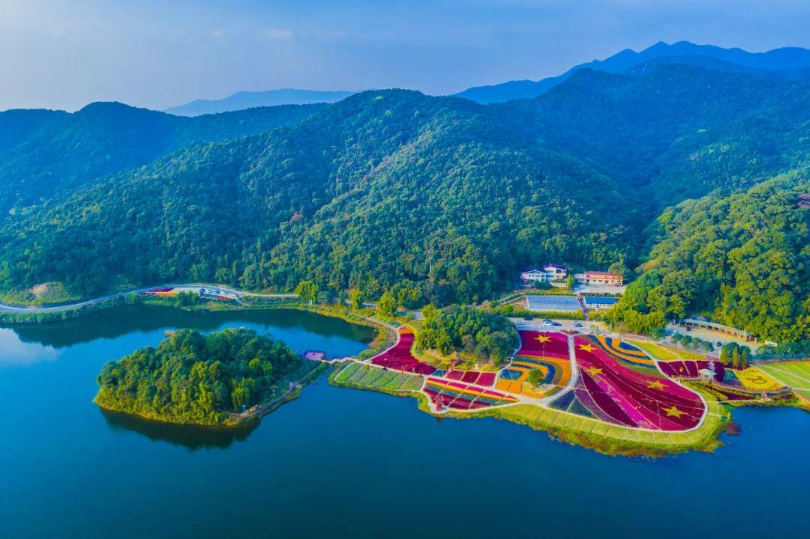
石门森林公园、南平静修小镇
泰康之家·粤园、德福护理院
阳光人家·广州、东华阳光城
| 比较维度 | 文旅游览类生态与文化体验 | 医疗康护类专业照护与康复 | 休闲社区类品质生活与社群 |
|---|---|---|---|
| 核心资源 | 森林、温泉、山水、田园 及人文景观 | 自建 / 邻近医疗资源 与专业护理服务 | 近郊环境品质 与城市生活配套 |
| 目标客群 | 健康活力人群 周末与短期休闲客群 | 失能、半失能、高龄长者 及术后康复人群 | 健康、自理型长者 关注品质与社交 |
| 服务逻辑 | 短期体验 环境疗愈与轻度干预 | 评估、康复、护理 持续服务与专业保障 | 健康管理、文娱社交 短期体验与长期居住 |
| 主要业态 | 餐饮、住宿、游览 森林 / 温泉 / 研学体验 | 医疗康复、康养居住 及餐饮服务 | 康养居住、健康管理 餐饮与文娱 |
| 城市关系 | 生态资源优先 关注公共交通与服务接驳 | 城市嵌入 / 近郊自配套 关注探视与服务可达 | 在生态环境与 城市便利之间寻找平衡 |
对策划的启示 不能只依据“康养”标签复制业态。需要把资源条件、照护深度和停留方式一起判断，再确定服务设施与内容组合。
围绕物理、人文与制度环境，研究学生自述体验及需求差异。
并按年级、专业和竞赛参与经历观察需求差异，形成环境优化建议。
KMO 与 Cronbach α 显示样本与量表具备较好信效度。
基本信息 + 正负向配对题
创新阻碍 / 支持多选题 + 开放题
样本汇总、频数分布、信效度检查
区分多选题的响应率与受访者选择比例
Kano需求分层、多选分析与分组观察
原汇报呈现因子载荷及解释率输出
课程安排、容错机制、实践资源
与企业项目等支持方案
从学生自述体验出发，识别物理、人文与制度环境中的关键需求，为高校创新支持提供改进方向。
多选题，n=351，可重复选择；图示比例＝选择该项的受访者数 ÷ 351，非全部选择次数中的响应率。来源：原汇报P26—27柱图。
按必备、期望、魅力、无差异四类，识别需求属性与满足优先级。
课程安排优化与容错机制；
完善实践设备、导师与企业项目支持。
业务问题：资源条件、目标客群与业态清单分散，方案判断难以追溯。
生态 / 文化
设施 / 交通 / 市场
8类客群
10项需求维度
条件说明 / 得分排序
主导 / 辅助 / 配套
资源不足列培育备选
空间载体 / 收益类型
参数情景比较
银发康养、家庭代际、文化康养等8类
自然亲近、健康改善、文化沉浸等10项
通过资源条件判断与客群需求匹配形成排序
继续关联空间载体、收益类型与估算参数
自然亲近 / 文化沉浸 / 逃离常规
↓
旅居康养 + 疗愈康养
↓
康养社区 / 候鸟式旅居基地
冥想中心 / 心灵书店
围绕康养项目定位与业态组合，建立资源、客群、需求、产业、业态、空间、收益七层框架，以需求权重、产业匹配评分与推荐解释支撑决策。
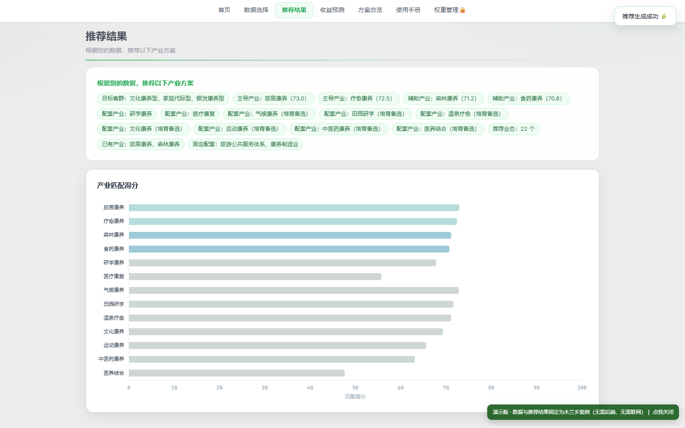
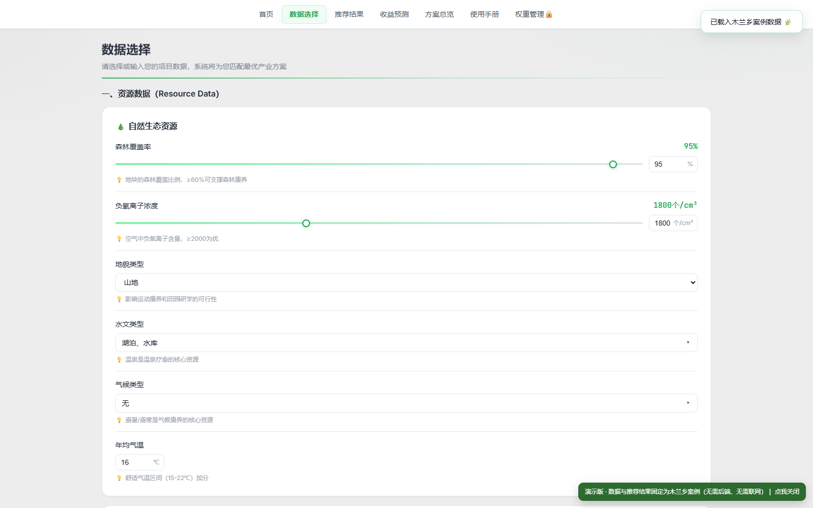
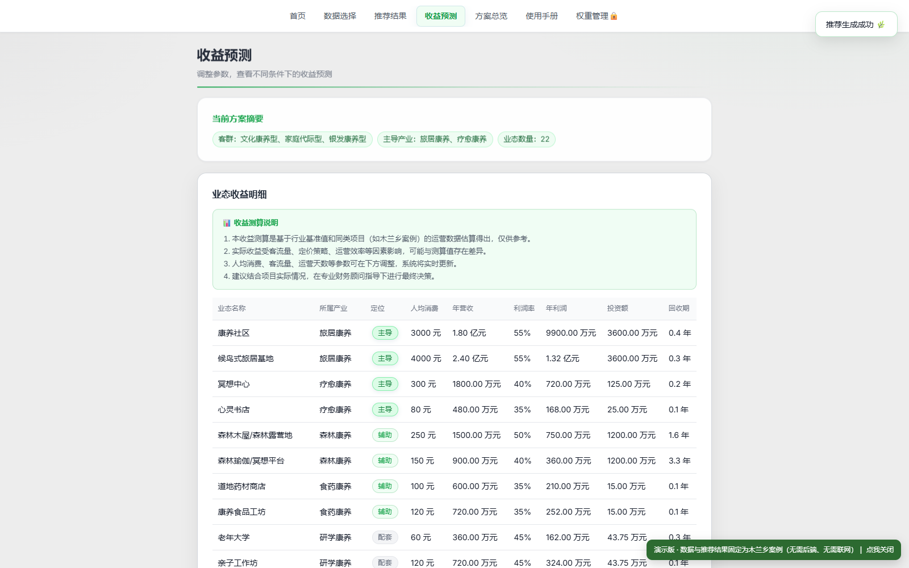
围绕康养项目定位与业态组合，把匹配关系落成可检查、可运行的决策流程。



文化识别度 · 设计转化度 · 环境融合度 · 美学独特性 · 历史承载度
产出：地域文脉分析、色彩主题与三组方案比较。
相关研究整理为主笔论文《基于文脉特征评价的超高压输电塔工程美学设计方法》。
居住区规划设计 / 生产性空间与邻里交往
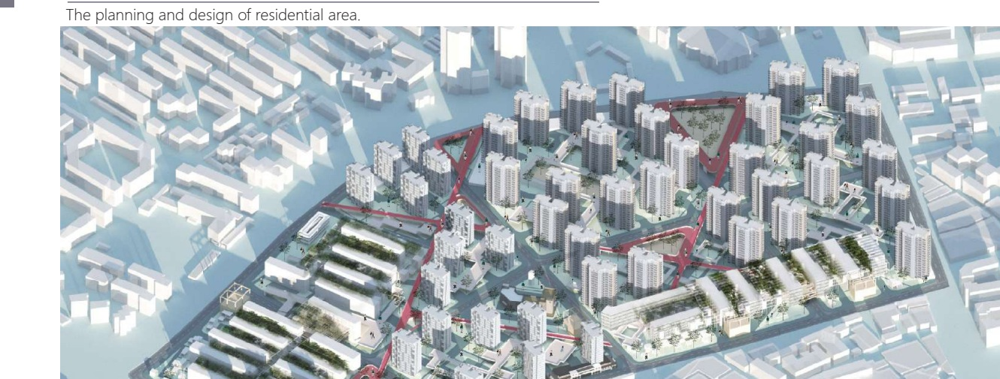
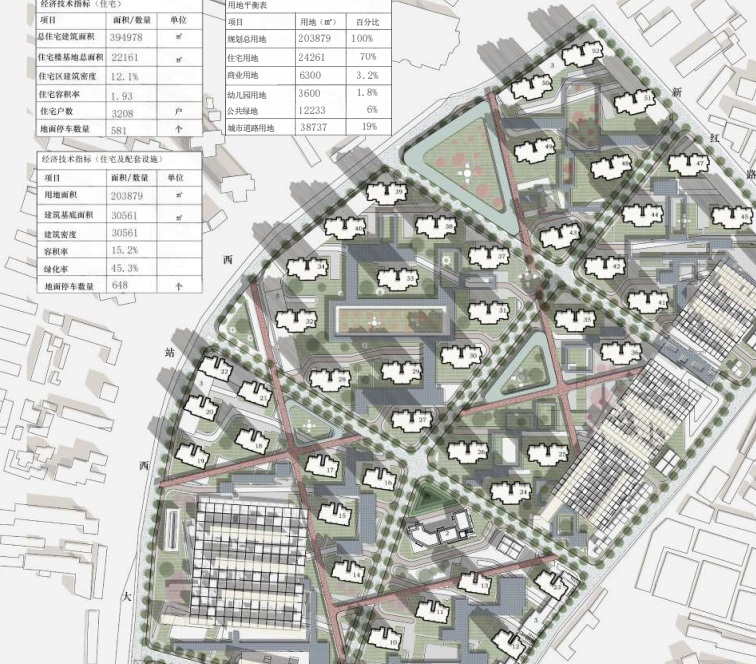
问题 食物供给与社区交往如何结合？
方法 生活需求分析、生产性空间介入。
方案 阳台、墙面与社区农园，连接步行与公共活动空间。
收录于本人本科作品集。基于社会网络分析视角下的乡村改造
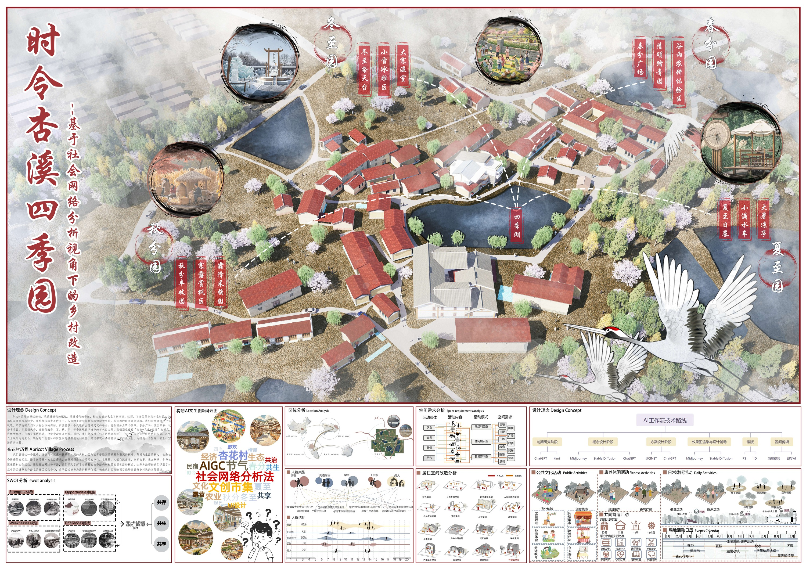
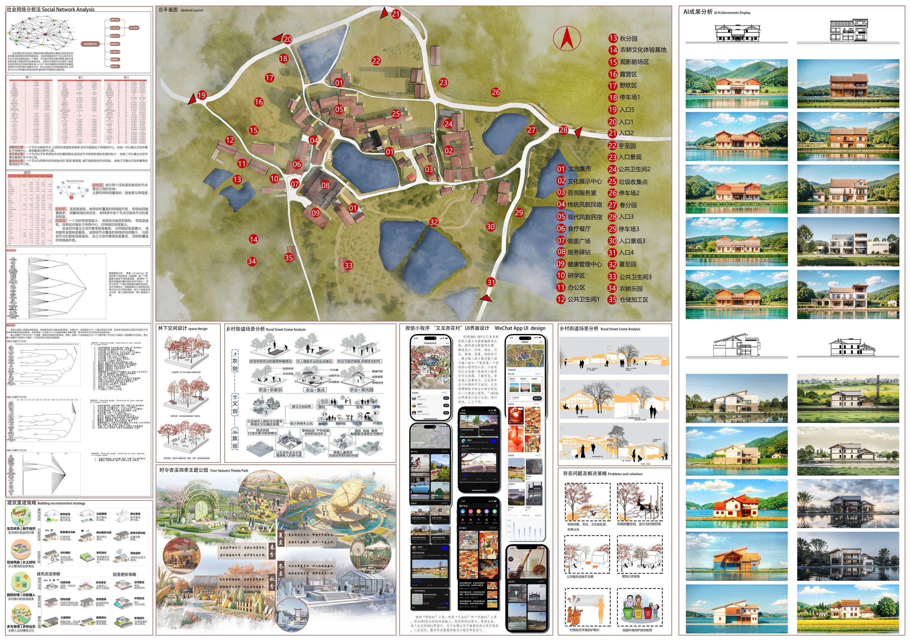
围绕“生态＋文化＋经济”构思更新路径，以社会网络分析（SNA）辅助功能布局，运用AIGC工具辅助方案可视化表达。
从现场与案例中发现问题，
用策划组织内容，用数据检验线索，
再用AI工具辅助比较与决策。
求职方向：湖北省建筑设计院策划研究中心实习生
田野与案例
建立事实基础
客群与内容
组织体验场景
问卷与指标
解释判断依据
匹配与原型
辅助方案决策